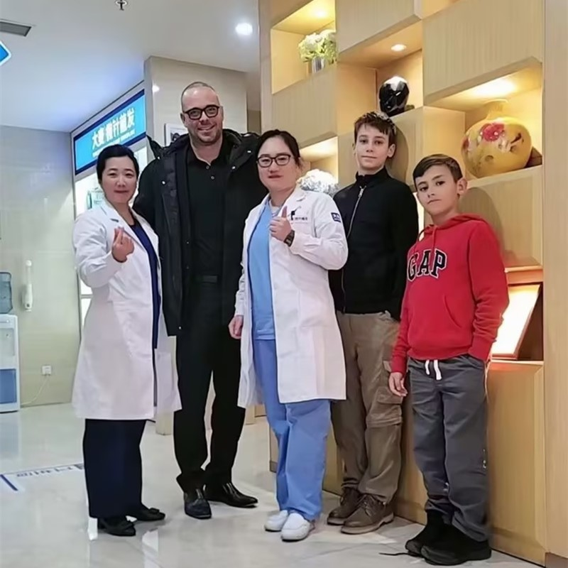

微創毛囊單位摘取，配合微針精準技術

毛囊單位摘取（FUE）是當今最先進且最受歡迎的植髮技術。在大麥，我們透過專利微針技術完善FUE，讓手術更精準、更微創、恢復更快。與過時的方法不同，我們的FUE手術不會留下線性疤痕，讓您獲得自然效果，僅需1-3天即可返回工作。
為什麼FUE已成為現代植髮的黃金標準
結合中國創新與國際標準
6個簡單步驟，打造您的新髮際線
個人化髮際線設計與治療計劃
溫和準備捐贈區以便摘取
使用微針技術精準FUE摘取
專業護理與準備已摘取的毛囊
專利種植筆完美種植
完整術後護理說明與追蹤計劃
業界領導者，效果有證實
自2006年起即為微針植髮技術的先驅與領導者
遍及中國各大城市，均維持相同高標準
創新的微針與種植筆技術，呈現卓越效果
深受全球患者信賴，帶來改變人生的效果
在整個治療過程中為國際患者提供完整英文支援
最先進的設施與嚴格的安全規範，讓您安心
看看我們患者達成的驚人轉型


與我們滿意患者共度的時刻

成功手術後與我們醫療團隊合影

與我們醫生一同慶祝絕佳效果

又一位滿意患者分享喜悅

患者出院前與我們專家合影

開心的患者與陳醫生在治療後

興奮的患者展示新樣貌
聽聽全球各地滿意患者的心得
"我在Google上研究FUE vs FUT好幾個月！大麥的微針技術FUE完美！無線性疤痕，恢復快！我是從台灣過來的，真的很滿意！"
"最小侵入、無縫線、自然效果！FUE正是我想要的！大麥的技術給了我驚人的密度！香港朋友都問我去哪裡做的！"
"FUE鑽孔摘取超級精準！對我的捐贈區沒有損傷！我的效果很自然，而且很快就恢復正常！我從澳門過來很方便！"
"單一毛囊摘取意味著沒有長疤痕！我仍然可以留短髮！這對我來說是個重要因素！完美效果！在Bing上看到的推薦真的很不錯！"
"聽過其他FUE診所的恐怖故事，但大麥的品質控管讓我安心！毛囊存活率太棒了！從香港過來真的很值得！"
"最小停工期！幾天內就返回工作！FUE比我預期的容易得多！我的頭髮完美地重新生長！Google上的評價真實可靠！"
體驗我們現代舒適的設施

我們最先進的設施

在我們頂級休息室放鬆

無菌且先進

隱私且專業

舒適的術後空間

歡迎的入口
找到關於植髮的常見問題解答
聯絡我們進行免費諮詢
15810155700
+86 13730143529
hairtransplant@qq.com